ผู้เชี่ยวชาญงานวิศวกรรมฐานราก บริการตอกเสาเข็มไมโครไพล์
ต่อเติม เสริมโครงสร้าง แก้ไขอาคารทรุดตัว ครอบคลุมพื้นที่ภาคใต้
เราคือทีมผู้เชี่ยวชาญมากประสบการณ์ งานเล็ก งานใหญ่ ไม่เกี่ยงพื้นที่ บริการตอกเสาเข็มไมโครไพล์ ออกแบบสำหรับการเข้าทำงานในพื้นที่จำกัด ซอยแคบ ชิดรั้ว หรือชิดโครงสร้างเดิม โดยไม่ก่อให้เกิดแรงสั่นสะเทือนกระทบเพื่อนบ้าน พร้อมรายการคำนวณและใบรับรองทางวิศวกรรมถูกต้อง
ปั้นจั่นตีนตะขาบลดแรงสั่นสะเทือน
สงขลา นครศรีฯ ตรัง พัทลุง และอื่นๆ
ผ่านการตรวจประเมินคุณภาพมาตรฐานทางวิศวกรรมร่วมกับทีมบริการเทคนิคของ SCG
(I-MICROPILE)
เสาเข็มคอนกรีตอัดแรงรูปตัวไอ (I-Shape) ที่ออกแบบมาเพื่อแก้ปัญหาการเข้าทำงานในพื้นที่จำกัดโดยเฉพาะ
ลักษณะเด่น: ผลิตจากคอนกรีตอัดแรงคุณภาพสูง ออกแบบมาเพื่อลดแรงสั่นสะเทือนขณะตอก
ข้อดี: สามารถทำงานในพื้นที่แคบได้ (กว้างเพียง 1.5 เมตร) และหน้างานสะอาดไม่เลอะเทอะเหมือนเข็มเจาะ
เหมาะสำหรับ: งานต่อเติมบ้าน พื้นที่ที่ต้องการความสะอาด และงานโครงสร้างทั่วไปที่ไม่หนักจนเกินไป
ขนาดและการรับน้ำหนัก (Safe Load):
(SPUN MICROPILE)
เสาเข็มกลมแรงเหวี่ยงหนีศูนย์ ที่ขึ้นชื่อเรื่องความแข็งแกร่งและการรับน้ำหนัก
ลักษณะเด่น: เป็นเสาเข็มกลมที่มีรูกลวงตรงกลาง ผลิตด้วยกรรมวิธีแรงเหวี่ยงหนีศูนย์ (Centrifugal Spinning)
ข้อดี: เนื้อคอนกรีตมีความหนาแน่นสูงมาก ทนทานต่อแรงตอก และสามารถรับน้ำหนักได้เหนือกว่าเสาเข็มทั่วไป
เหมาะสำหรับ: โครงสร้างหลักของอาคาร อาคารที่มีความสูงหลายชั้น หรือส่วนต่อเติมที่ต้องการความมั่นคงสูงสุด
ขนาดและการรับน้ำหนัก (Safe Load):
(HYDRAULIC PILE)
ที่สุดของเทคโนโลยีการแก้ปัญหา "บ้านทรุด" และการเสริมรากฐานอาคารเดิม
ลักษณะเด่น: ใช้แม่แรงไฮดรอลิคกดเสาเข็มลงดินโดยใช้น้ำหนักตัวอาคารเป็นแรงต้าน
ข้อดี: ไร้แรงสั่นสะเทือน โดยสิ้นเชิง (Static Load) จึงไม่กระทบโครงสร้างเดิมที่กำลังมีปัญหา และสามารถวัดค่าการรับน้ำหนักได้จริงทันทีขณะกด (Real-time Load Test)
เหมาะสำหรับ: งานซ่อมแซมบ้านทรุดเอียง การเสริมฐานรากใต้ตึกเดิม (Underpinning) หรือการดีดอาคารปรับระดับ
(SCREW PILE)
ติดตั้งไว รับน้ำหนักได้ทันที เหมาะสำหรับงานต่อเติมและฐานรากโซล่าเซลล์
นวัตกรรมเสาเข็มเหล็กแรงดึงสูงที่ออกแบบมาให้มีใบเกลียว (Helix) คล้ายสกรูขนาดใหญ่ ติดตั้งด้วยระบบหัวเจาะไฮดรอลิคหมุนเข็มลงดินโดยไม่ต้องขุดหน้าดิน
จุดเด่น: หน้างานสะอาด 100% ไม่มีดินโคลนเลอะเทอะ ไม่มีการสั่นสะเทือนที่กระทบโครงสร้างเดิม
ความเร็ว: ติดตั้งได้รวดเร็วที่สุด และสามารถรับน้ำหนัก (Load) ได้ทันทีหลังติดตั้งเสร็จ
การใช้งาน: เหมาะอย่างยิ่งสำหรับงานฐานรากโครงสร้างน้ำหนักเบาถึงปานกลาง เช่น โรงจอดรถ, ห้องกระจก, งานต่อเติมลานซักล้าง หรือแม้แต่ฐานรากแผงโซล่าเซลล์ (Solar Farm) ที่ต้องการความแม่นยำและรวดเร็ว
(HYDRAULIC JACKED PILE)
หยุดปัญหาบ้านทรุดถาวร แม่นยำด้วยระบบวัดน้ำหนักจริงขณะกด
เทคโนโลยีขั้นสูงสำหรับการซ่อมแซมฐานราก (Underpinning) โดยใช้แม่แรงไฮดรอลิคกดเสาเข็มลงไปในดินจนถึงชั้นดินดาน โดยใช้ "น้ำหนักตัวอาคาร" เป็นแรงต้าน
จุดเด่น: สามารถตรวจสอบแรงต้าน (Load Test) ได้แบบ Real-time ทุกต้น เพื่อให้มั่นใจว่าเข็มถึงชั้นดินแข็งและรับน้ำหนักได้จริง
ความปลอดภัย: ไร้แรงสั่นสะเทือนและไร้เสียงรบกวน (Static Load) ทำให้ปลอดภัยต่อโครงสร้างอาคารที่กำลังมีปัญหาและบ้านข้างเคียง
การใช้งาน: เหมาะสำหรับงานซ่อมแซมบ้านที่ทรุดเอียง, การเสริมความแข็งแรงให้ฐานรากเดิม หรือการ "ดีดบ้าน" ปรับระดับอาคารให้กลับมาตรงเหมือนเดิม
(Professional Foundation Solutions: I-Micropile, Spun Micropile, Steel Pile, and Hydraulic Jack-in Pile)
รับประกันความมั่นคงฐานราก มั่นใจถ่ายน้ำหนักสู่ชั้นดินดานจริงทุกต้น
วางผังพิกัดตำแหน่งเสาเข็มตามแบบวิศวกรรมอย่างแม่นยำ
ตรวจแนวดิ่งลูกดิ่งและระดับน้ำ 2 ทิศทางก่อนและระหว่างตอก
เชื่อมประกบแผ่นเพลทเหล็กหัวต่อเข็มรอบแนว Full Weld
บันทึกการจมของเสาเข็ม 10 ครั้งสุดท้าย ตามสมการวิศวกรรม
ออกหนังสือรับรองการตอกและรายการคำนวณ โดยวิศวกร
คลิกที่รูปภาพเพื่อขยายดูภาพขนาดใหญ่
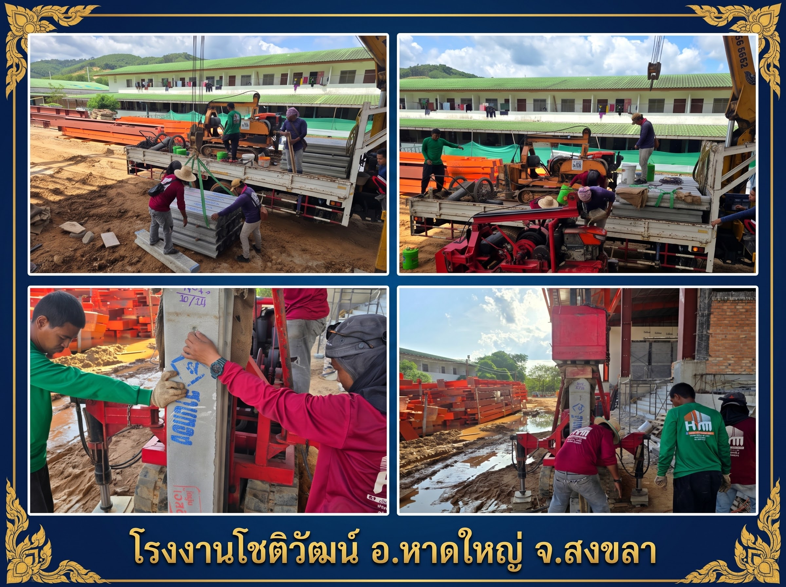
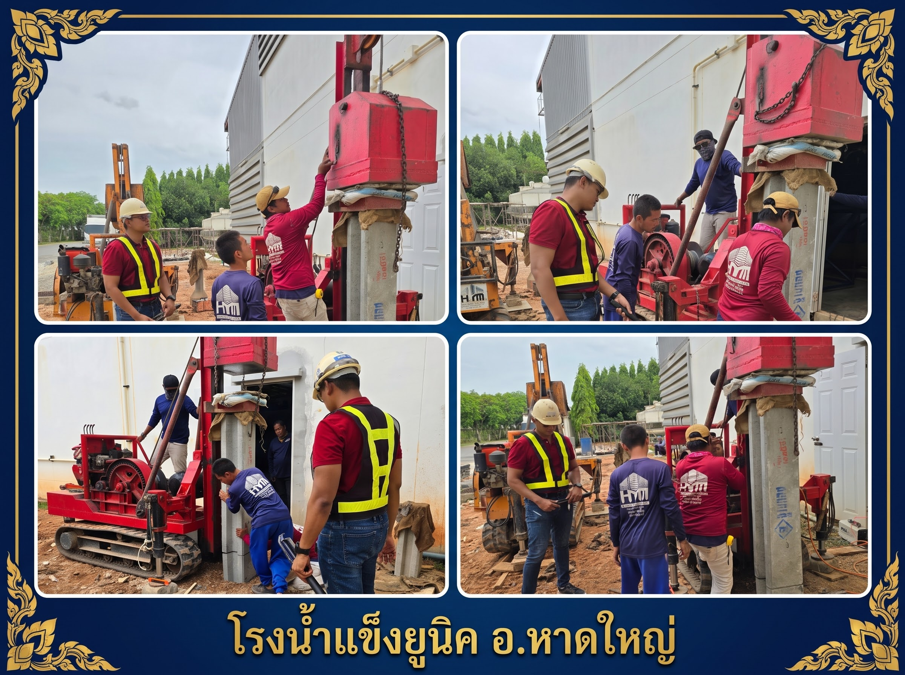
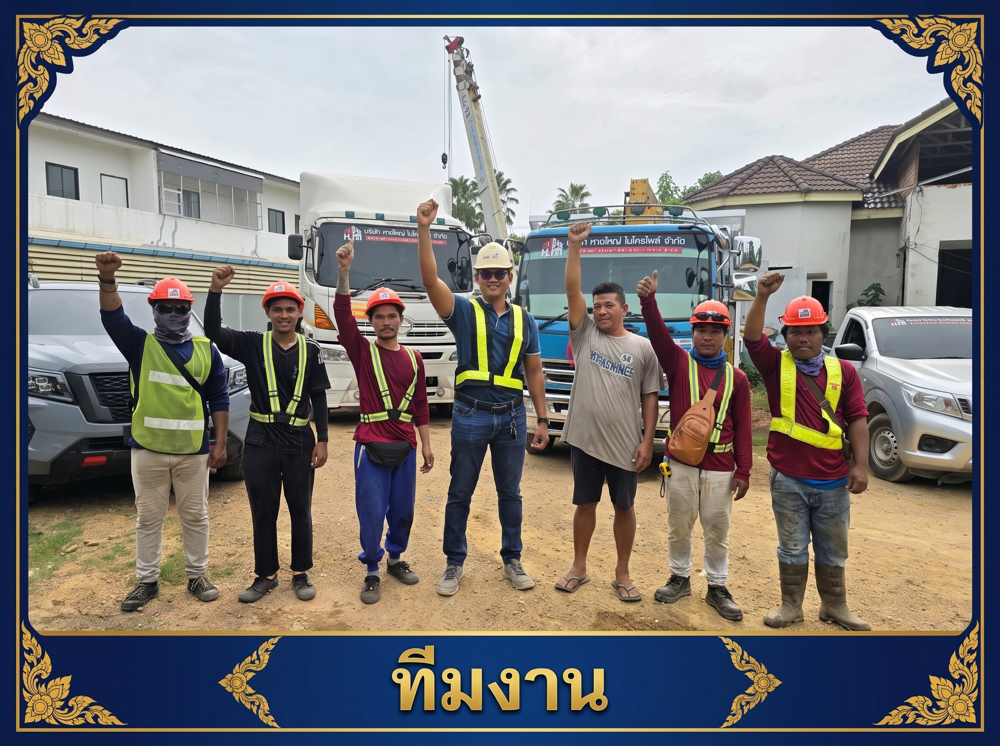
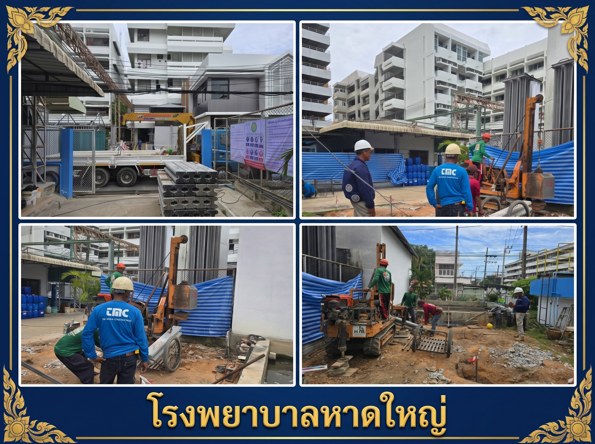
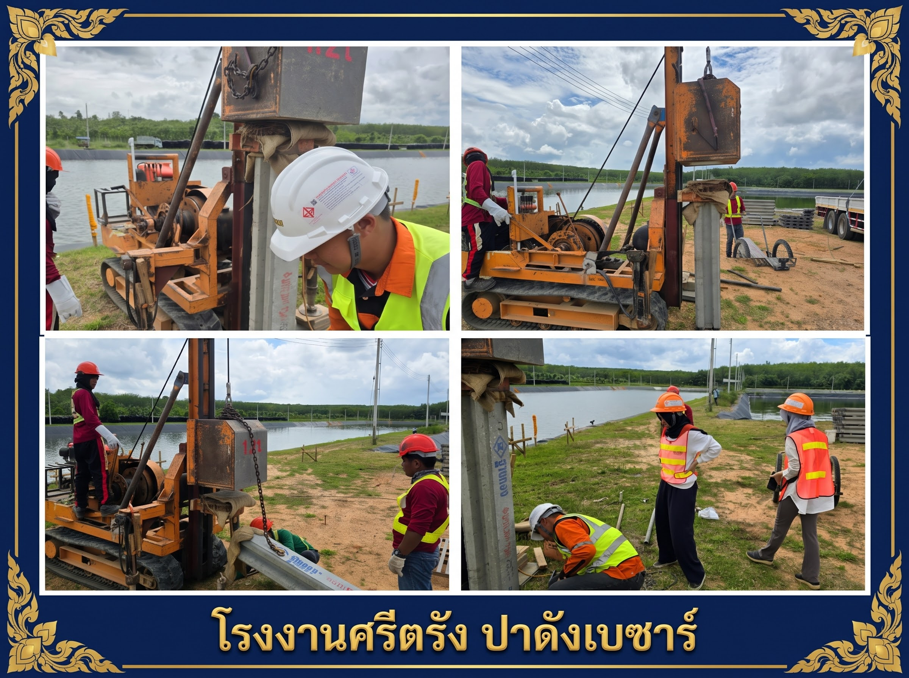
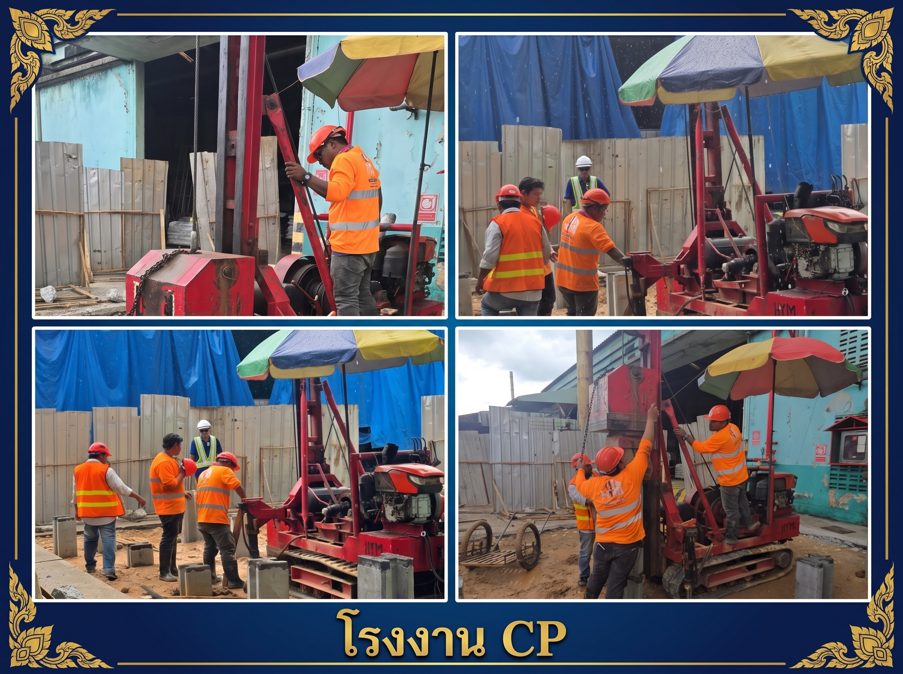
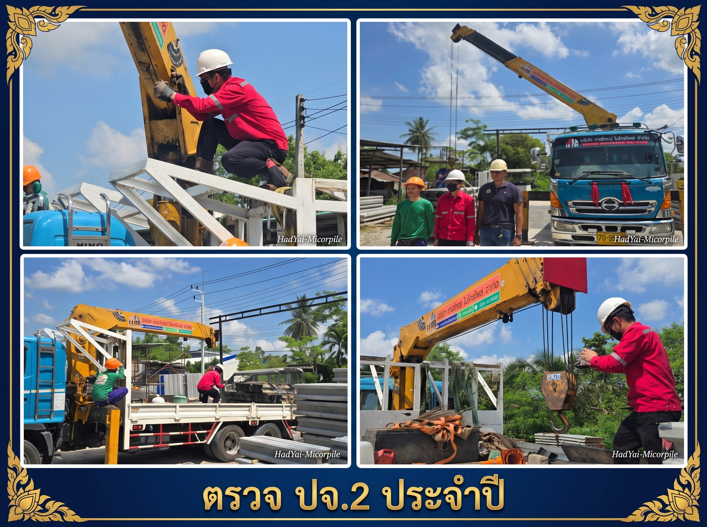
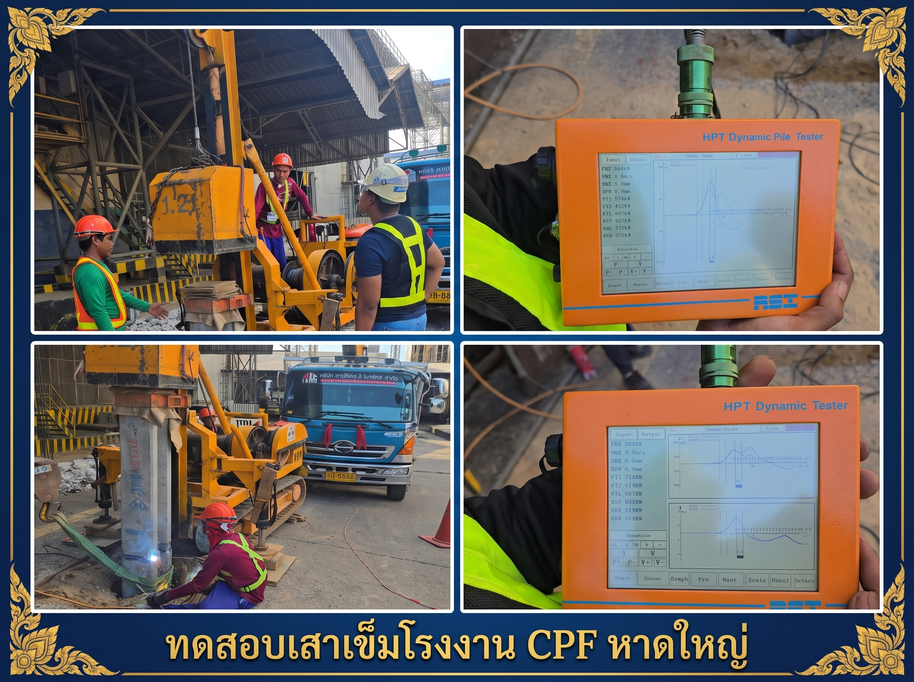
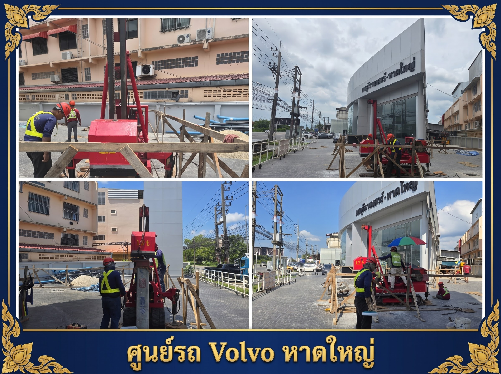
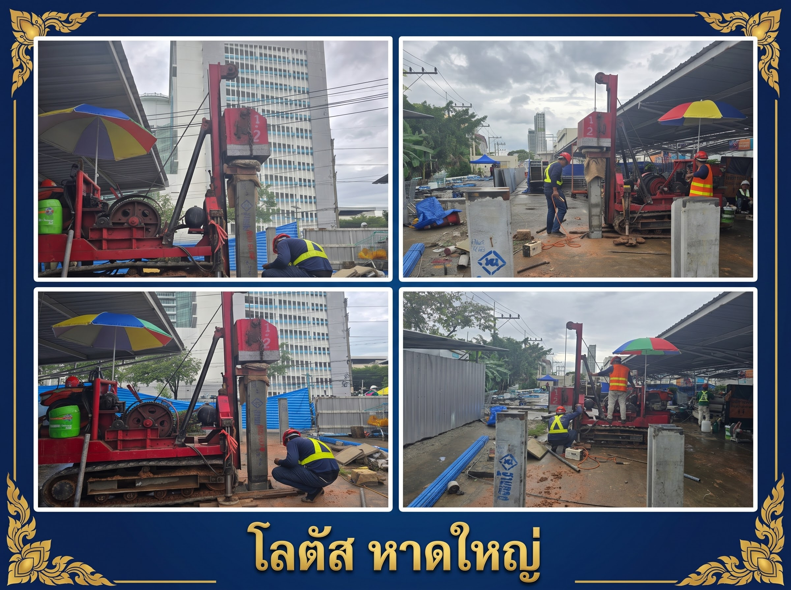
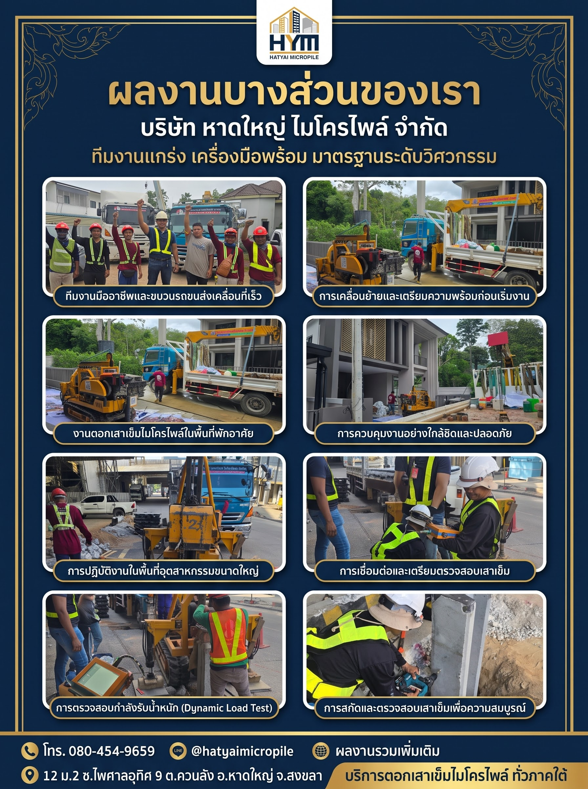